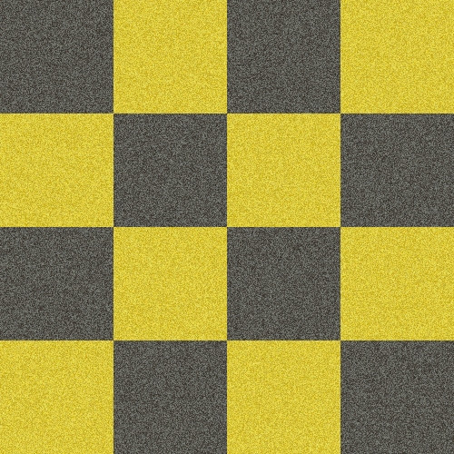
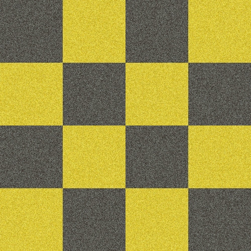

メディアクエリ
メディアクエリーでブレークポイントを設定し， 画面サイズや向きに合わせてページの表示状態を変更します。
Fluid Glid
パーセンテージでサイズ指定し，現在のサイズに合わせてスタイル変更
Fluid Image
画面サイズに合わせて画像サイズを変更する。
メディアクエリーでブレークポイントを設定し， 画面サイズや向きに合わせてページの表示状態を変更します。
パーセンテージでサイズ指定し，現在のサイズに合わせてスタイル変更
画面サイズに合わせて画像サイズを変更する。
